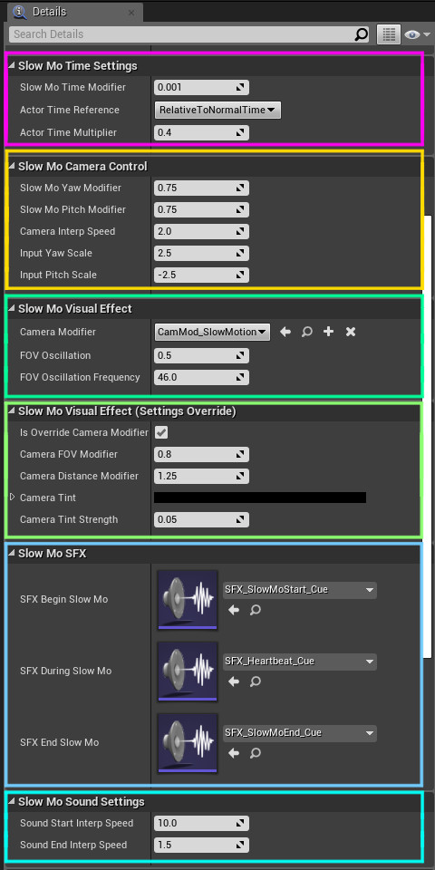

Details and Settings
The following are settings that you can modify for your usage.

Open your character blueprint, select the SlowMoComponent on your character's component tab, then check the Details tab.
(Details tab is usually on the right side of your screen).
Slow Mo Time Settings
-
Slow Mo Time Modifier
How fast should time passed during Slow Mo.
0 = time stops
1 = normal time flow
>1 = time speedup
-
Actor Time Reference
The time reference on which the value of ActorTimeMultiplier is to be based upon.
Depending on this value, ActorTimeMultiplier will be calculated as either relative to the Slow Mo timeflow, or relative to the normal timeflow. -
Actor Time Multiplier
A multiplier of how fast the actor's timeflow is, relative to the values of ActorTimeReference and SlowMoTimeModifier.
1 = actor moves according to the relative timeflow
>1 = actor moves faster than the relative timeflow
0-1 = actor moves slower than the relative timeflow
Slow Mo Camera Control
-
Slow Mo Yaw Modifier
The camera's yaw value modifier during Slow Mo.
This determines how far the camera moves during Slow Mo, relative to its normal values.
To control how fast the camera moves during Slow Mo, see CameraInterpSpeed.1 = same as normal time.
-
Slow Mo Pitch Modifier
The camera's pitch value modifier during Slow Mo.
This determines how far the camera moves during Slow Mo, relative to its normal values.
To control how fast the camera moves during Slow Mo, see CameraInterpSpeed.1 = same as normal time.
-
CameraInterpSpeed
Interpolation speed, how quickly should the camera reaches its target during Slow Mo.
This is used as a delay lag so that the camera feels a bit slower when the Slow Mo is activated.<0 = no delay lag.
0 = camera not moving.
>0 = higher value is faster.
-
InputYawScale
This is used to modify how far PlayerController's AddYawInput will move your camera when given an input value.
If using UE4, you should set this to the same value as your PlayerController's InputYawScale.
If using UE5, you should set this to 1 or see the documentation on (deprecated) InputYawScale. -
InputPitchScale
This is used to modify how far PlayerController's AddPitchInput will move your camera when given an input value.
If using UE4, you should set this to the same value as your PlayerController's InputPitchScale.
If using UE5, you should set this to 1 or see the documentation on (deprecated) InputPitchScale.
Slow Mo Visual Effect
-
Camera Modifier
The Camera Modifier effect used during Slow Mo, by default set to CamMod_SlowMotion.
The default modifier generates the same effect as shown in the demo.
You can replace this with your own camera modifier if you wish. -
FOV_Oscillation
How strong should the camera oscillates during Slow Mo.
Mostly used to accompany the default heartbeat sound effect.
Can be set to 0 if not required.0 = no oscillation >0 = stronger oscillation -
FOV_OscillationFrequency
The frequency at which your camera should shake during Slow Mo.
Can be set to 0 if not required.0 = no oscillation >0 = faster oscillation
Slow Mo Camera Modifier (Settings Override)
These settings that can be used to override some of the CameraModifier values from inside the character blueprint.
The override only works for CameraModifier child classes that implements the I_CamMod interface.
If you need this feature, make sure to implement both SetupValues and GetValues of I_CamMod inside your CameraModifier child class.
Please refer to the CamMod_SlowMotion blueprint for further reference.
-
IsOverrideCameraModifierSettings
Set to
true to override some of the camera modifier settings.
If you prefer to handle all of your screen effects from the CameraModifier, make sure to turn this tofalse .Only applied if the Camera Modifier implements I_CamMod.
-
CameraFOV_Modifier
The camera's field of view modifier during Slow Mo, compared to its original FOV.
Only works if the Camera Modifier implements I_CamMod.1 = camera's default FOV.
0-1 = lower FOV.
>1 = higher FOV.
-
CameraDistanceModifier
Modifier of the camera's distance offset to the character during Slow Mo.
Only works if the Camera Modifier implements I_CamMod.1 = 1 = normal offset.
0-1 = nearer to the character.
>1 = further from the character.
-
CameraTint
The color tint of the camera during Slow Mo.
Setting this to black will disable the tint. -
CameraTintStrength
The intensity of the CameraTint.
Setting this to 0 will disable the tint.
Slow Mo Sound Effects
The following properties are expected to be filled with Sound Cues.
If you'd like to use your own custom sound effect, make sure to check the details on how the default Sound Cues are implemented in this package.
If you're not familiar with how the Sound Cue works, it's recommended that you at least do the following steps,
- Copy the default Sound Cues provided in this package.
- Open them in your editor, and replace the Wave Player node's Sound Wave value with your custom SFX asset.
-
SFX_BeginSlowMo
The sound effect played when Slow Mo is turned on.
-
SFX_DuringSlowMo
The sound effect played during the duration of the Slow Mo.
By default it is set to the sound of a heartbeat.Make sure that the SFX you used is looped.
-
SFX_EndSlowMo
The sound effect played when Slow Mo is turned off.
Slow Mo Sound Settings
-
SoundStartInterpSpeed
Interpolation speed, how quickly should the looped sound starts.
Higher value is faster. -
SoundEndInterpSpeed
Interpolation speed, how quickly should the looped sound ends.
Higher value is faster.
Functions and Events
For a list of functions and events that can be used with the package, proceed to the next page.